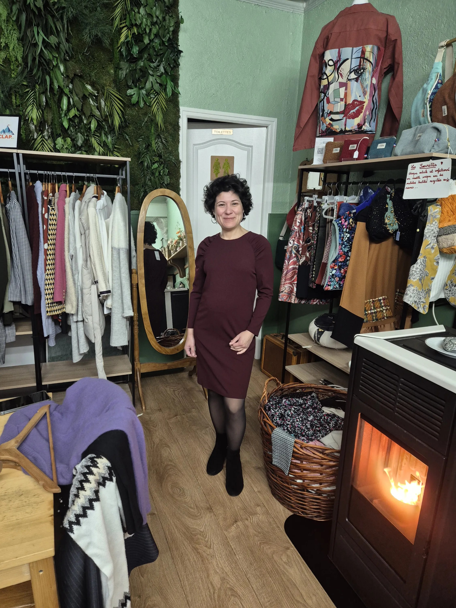
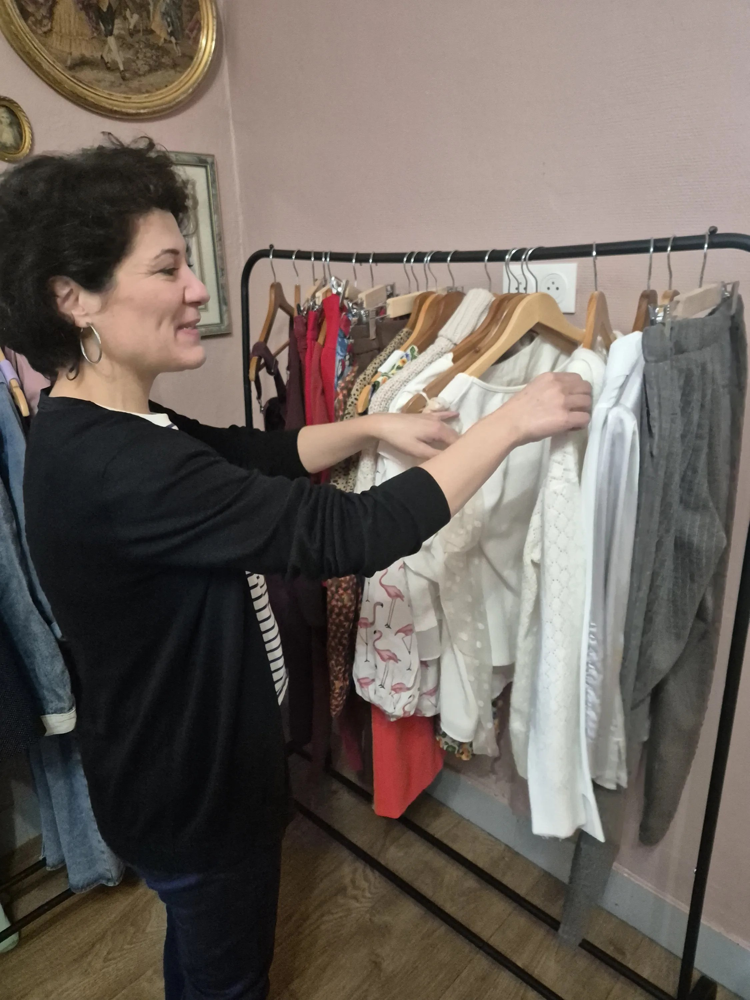
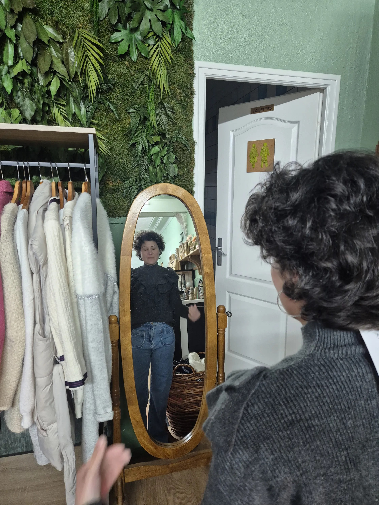

Shopping personnalisé
Et si faire du shopping devenait enfin simple ?

Tu as peut-être déjà ressenti cette impression de ne pas vraiment savoir t'habiller.
Tu regardes les vêtements, mais tu ne sais pas toujours lesquels choisir.
Tu hésites sur les couleurs.
Tu ne sais pas forcément comment les associer.
Et parfois, tu as simplement l'impression de ne plus savoir ce qui te correspond vraiment.
Alors tu achètes.
Mais une fois rentrée chez toi, le doute revient.
Est-ce que cette pièce me ressemble vraiment ?
Avec quoi vais-je la porter ?
Est-ce que je vais réellement la mettre ?
Et si le shopping pouvait devenir autre chose ?

Trouver ce qui te correspond vraiment
Le shopping personnalisé ne consiste pas simplement à faire les boutiques ensemble.
Mon rôle est de te guider et de te conseiller vers ce qui correspond réellement à ta personnalité, ta vie, ton quotidien et tes envies.
Nous allons regarder ensemble les coupes, les matières, les couleurs et les pièces qui peuvent trouver leur place dans ta garde-robe.
Pas pour te faire entrer dans une tendance.
Pas pour te faire acheter davantage.
Mais pour t'aider à comprendre ce qui fonctionne pour toi.
Une garde-robe qui s'adapte à ta vraie vie
Parce qu'une garde-robe qui te ressemble doit aussi être une garde-robe qui s'adapte à ta vraie vie.
Ton quotidien.
Ton rythme.
Ton environnement professionnel.
Tes habitudes.
Tes sorties.
Les différentes situations que tu rencontres.
L'objectif n'est pas de construire une garde-robe idéale sur le papier.
C'est de trouver des vêtements que tu vas réellement porter, vivre et aimer.
Bien plus qu'une séance de shopping
Parce qu'en réalité, nous ne faisons pas que du shopping.
À travers les vêtements, nous sommes aussi dans une construction ou une reconstruction de toi-même.
Le vêtement peut accompagner une période de changement.
Une nouvelle étape.
Une envie de te retrouver.
Ou simplement le besoin de te regarder autrement.
Alors, au fil des essayages et des découvertes, ton regard peut commencer à changer.
Tu apprends à observer différemment.
À faire des choix qui ont du sens pour toi.
À écouter ce qui te plaît réellement, plutôt que de choisir uniquement parce qu'une pièce est jolie, à la mode ou portée par quelqu'un d'autre.
Repartir avec des clés
L'objectif n'est pas que tu aies besoin de moi à chaque fois que tu souhaites faire du shopping.
Au contraire.
Je veux que tu repartes avec des clés pour continuer à faire ton shopping sans pression.
Des repères pour mieux comprendre les coupes qui te correspondent.
Des réflexes pour choisir les couleurs et les matières qui te ressemblent.
Et surtout, davantage de confiance dans tes choix.
Petit à petit, le shopping peut devenir plus simple.
Plus fluide.
Plus conscient.
Tu peux entrer dans une boutique sans avoir besoin de tout regarder.
Tu peux apprendre à reconnaître ce qui mérite ton attention.
Et surtout, tu peux commencer à acheter avec davantage de sérénité.

Un nouveau rapport au vêtement
Peut-être qu'au départ, tu viens simplement parce que tu ne sais plus quoi acheter.
Mais tu peux repartir avec quelque chose de bien plus précieux :
un regard différent sur toi et sur tes vêtements.
Ton rapport au vêtement commence à changer.
Tu te sens plus légère.
Plus heureuse.
Plus sûre de tes choix.
Et tu comprends peu à peu que t'habiller ne consiste pas à essayer de devenir quelqu'un d'autre.
C'est aussi une manière de te retrouver.
Le shopping comme un pas vers toi
Je ne veux pas simplement t'aider à remplir ton dressing.
Je veux t'aider à faire des choix qui ont du sens pour toi, aujourd'hui.
Parce que ton style peut évoluer.
Parce que ta vie évolue.
Parce que toi aussi, tu évolues.
Et parfois, quelques vêtements bien choisis peuvent accompagner beaucoup plus qu'un changement de garde-robe.
Ils peuvent accompagner un changement de regard sur soi.
Envie d'en discuter ?
Un premier échange suffit pour poser les bases, en douceur et sans engagement.